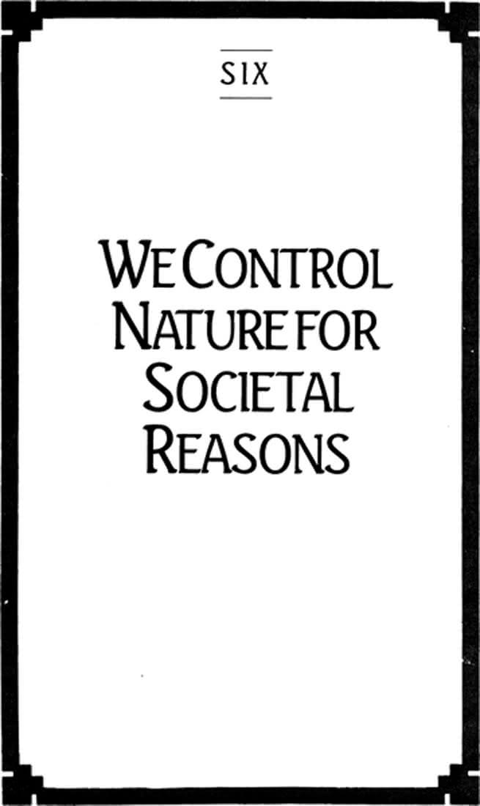

Chapter Six: We Control Nature for Societal Reasons

80
WE CONTROL NATURE for societal reasons. The control of nature advances with our ability to predict the outcome of natural processes. Inasmuch as predictions are but explanations in reverse, it is possible that they will be quite as combative as explanations. Indeed, prediction is the most highly developed skill of the Master Player, for without it control of an opponent is all the more difficult. It follows that our domination of nature is meant to achieve not certain natural outcomes, but certain societal outcomes.
A small group of physicists, using calculations of the highest known abstraction, uncovered a predictable sequence of subatomic reactions that led directly to the construction of a thermonuclear bomb. It is true that the successful detonation of the bomb proved the predictions of the physicists, but it is also true that we did not explode the bomb to prove them correct; we exploded it to control the behavior of millions of persons and to bring our relations with them to a certain closure.
What this example shows is not that we can exercise power over nature, but that our attempt to do so masks our desire for power over each other. This raises a question as to the cultural consequences of abandoning the strategy of power in our attitude toward nature.
The alternative attitudes toward nature can be characterized in a rough way by saying that the result of approaching nature as a hostile Other whose designs are basically inimical to our interests is the machine, while the result of learning to discipline ourselves to consist with the deepest discernable patterns of natural order is the garden.
“Machine” is used here as inclusive of technology and not as an example of it—as a way of drawing attention to the mechanical rationality of technology. We might be surprised by the technological devices that spring from the imagination of gifted inventors and engineers, but there is nothing surprising in the technology itself. The physicists’ bomb is as thoroughly mechanical as the Neanderthal’s lever—each the exercise of calculable cause-and-effect sequences.
“Garden” does not refer to the bounded plot at the edge of the house or the margin of the city. This is not a garden one lives beside, but a garden one lives within. It is a place of growth, of maximized spontaneity. To garden is not to engage in a hobby or an amusement; it is to design a culture capable of adjusting to the widest possible range of surprise in nature. Gardeners are acutely attentive to the deep patterns of natural order, but are also aware that there will always be much lying beyond their vision. Gardening is a horizonal activity.
Machine and garden are not absolutely opposed to each other. Machinery can exist in the garden quite as finite games can be played within an infinite game. The question is not one of restricting machines from the garden but asking whether a machine serves the interest of the garden, or the garden the interest of the machine. We are familiar with a kind of mechanized gardening that has the appearance of high productivity, but looking closely we can see that what is intended is not the encouragement of natural spontaneity but its harnessing.
81
The most elemental difference between the machine and the garden is that one is driven by a force which must be introduced from without, the other grown by an energy which originates from within itself.
Certainly machines of extraordinary complexity have been built: spacecraft, for example, that sustain themselves for months in the void while performing complicated functions with great accuracy. But no machine has been made, nor can one be made, that has the source of its spontaneity within itself. A machine must be designed, constructed, and fueled.
Certainly gardens can be treated with such a range of chemical and technological strategies that we can speak of “raising” food, and of the food we have raised as “produce.” But no way has been found, or can be found, by which organic growth can be forced from without. The application of fertilizers, herbicides, and any number of other substances does not alter growth but allows growth; it is meant to consist with natural growth. A plant cannot be designed or constructed. Though we seem to give it “fuel” in the form of rich earth and appropriate nutrients, we depend on the plant to make use of the fuel by way of its own vitality. A machine depends on its designer and its operator both for the supply of fuel and its consumption. A machine has not the merest trace of its own spontaneity or vitality. Vitality cannot be given, only found.
82
Just as nature has no outside, it has no inside. It is not divided within itself and cannot therefore be used for or against itself. There is no inherent opposition of the living and the nonliving within nature; neither is more or less natural than the other. The use of agricultural poisons, for example, will surely kill selected organisms; it will arrest the spontaneity of living entities—but it is not an unnatural act. Nature has not been changed. All that changes is the way we discipline ourselves to consist with natural order.
Our freedom in relation to nature is not the freedom to change nature; it is not the possession of power over natural phenomena. It is the freedom to change ourselves. We are perfectly free to design a culture that will turn on the awareness that vitality cannot be given but only found, that the given patterns of spontaneity in nature are not only to be respected, but to be celebrated.
Although “natural order” is the common expression, it has something of a veiling quality about it. More properly speaking, it is not the order of nature but its irreducible spontaneity with which we find ourselves contending. That nature has no outside, and no inside, that it suffers no opposition to itself, that it is not moved by unnatural influence, is not the expression of an order so much as it is the display of a perfect indifference on nature’s part to all matters cultural.
Nature’s source of movement is always from within itself; indeed it is itself. And it is radically distinct from our own source of movement. This is not to say that, possessing no order, nature is chaotic. It is neither chaotic nor ordered. Chaos and order describe the cultural experience of nature—the degree to which nature’s indifferent spontaneity seems to agree with our current manner of cultural self-control. A hurricane, or a plague, or the overpopulation of the earth will seem chaotic to those whose cultural expectations are damaged by them and orderly to those whose expectations have been confirmed by them.
83
The paradox in our relation to nature is that the more deeply a culture respects the indifference of nature, the more creatively it will call upon its own spontaneity in response. The more clearly we remind ourselves that we can have no unnatural influence on nature, the more our culture will embody a freedom to embrace surprise and unpredictability.
Human freedom is not a freedom over nature; it is the freedom to be natural, that is, to answer to the spontaneity of nature with our own spontaneity. Though we are free to be natural, we are not free by nature; we are free by culture, by history.
The contradiction in our relation to nature is that the more vigorously we attempt to force its agreement with our own designs the more subject we are to its indifference, the more vulnerable to its unseeing forces. The more power we exercise over natural process the more powerless we become before it. In a matter of months we can cut down a rain forest that took tens of thousands of years to grow, but we are helpless in repulsing the desert that takes its place. And the desert, of course, is no less natural than the forest.
84
Such contradiction is most obvious in the matter of machinery. We make use of machines to increase our power, and therefore our control, over natural phenomena. By exerting themselves no more than is necessary to operate fingertip controls, a team of workers can cut six-lane highways through mountains and dense forest, or fill in wetlands to build shopping malls.
While a machine greatly aids the operator in such tasks, it also disciplines its operator. As the machine might be considered the extended arms and legs of the worker, the worker might be considered an extension of the machine. All machines, and especially very complicated machines, require operators to place themselves in a provided location and to perform functions mechanically adapted to the functions of the machine. To use the machine for control is to be controlled by the machine.
To operate a machine one must operate like a machine. Using a machine to do what we cannot do, we find we must do what the machine does.
Machines do not, of course, make us into machines when we operate them; we make ourselves into machinery in order to operate them. Machinery does not steal our spontaneity from us; we set it aside ourselves, we deny our originality. There is no style in operating a machine. The more efficient the machine, the more it either limits or absorbs our uniqueness into its operation.
Indeed, we come to think that the style of operation does not belong to the operator at all, but is inherent in the machine. Advertisers and manufacturers speak of their products as though they have designed style into them. Most consumer products are “styled” inasmuch as they actually standardize the activity or the taste of the consumer. In a perfect contradiction we are urged to buy a “styled” artifact because others are also buying it—that is, we are asked to express our genius by giving up our genius.
Because we make use of machinery in the belief we can increase the range of our freedom, and instead only decrease it, we use machines against ourselves.
85
Machinery is contradictory in another way. Just as we use machinery against ourselves, we also use machinery against itself. A machine is not a way of doing something; it stands in the way of doing something.
When we use machines to achieve whatever it is we desire, we cannot have what we desire until we have finished with the machine, until we can rid ourselves of the mechanical means of reaching our intended outcome. The goal of technology is therefore to eliminate itself, to become silent, invisible, carefree.
We do not purchase an automobile, for example, merely to own some machinery. Indeed, it is not machinery we are buying at all, but what we can have by way of it: a means of rapidly carrying us from one location to another, an object of envy for others, protection from the weather. Similarly, a radio must cease to exist as equipment and become sound. A perfect radio will draw no attention to itself, will make it seem we are in the very presence of the source of its sound. Neither do we watch a movie screen, nor look at television. We look at what is on television, or in the movie, and become annoyed when the equipment intrudes—when the film is unfocused or the picture tube malfunctions.
When machinery functions perfectly it ceases to be there—but so do we. Radios and films allow us to be where we are not and not be where we are. Morever, machinery is veiling. It is a way of hiding our inaction from ourselves under what appear to be actions of great effectiveness. We persuade ourselves that, comfortably seated behind the wheels of our autos, shielded from every unpleasant change of weather, and raising or lowering our foot an inch or two, we have actually traveled somewhere.
Such travel is not through space foreign to us, but in a space that belongs to us. We do not move from our point of departure, but with our point of departure. To be moved from our living room by an automobile whose upholstered seats differ scarcely at all from those in our living rooms, to an airport waiting room and then to the airplane where we are provided the same sort of furniture, is to have taken our origin with us; it is to have left home without leaving home. To be at home everywhere is to neutralize space.
Therefore, the importance of reducing time in travel: by arriving as quickly as possible we need not feel as though we had left at all, that neither space nor time can affect us—as though they belong to us, and not we to them.
We do not go somewhere in a car, but arrive somewhere in a car. Automobiles do not make travel possible, but make it possible for us to move locations without traveling.
Thus, the theatricality of machinery: Such movement is but a change of scenes. If effective, the machinery will see to it that we remain untouched by the elements, by other travelers, by those whose towns or lives we are traveling through. We can see without being seen, move without being touched.
When most effective, the technology of communication allows us to bring the histories and the experiences of others into our home, but without changing our home. When most effective, the technology of travel allows us to pass through the histories of other persons with the “comforts of home,” but without changing those histories.
When it is most effective, machinery will have no effect at all.
86
In still another way is machinery contradictory. Using it against itself and against ourselves, we also use machinery against each other.
I cannot use machinery without using it with another. I do not talk on the telephone; I talk with someone on the telephone. I listen to someone on the radio, drive to visit a friend, compute business transactions. To the degree that my association with you depends on such machinery, the connecting medium makes each of us an extension of itself. If your business activities cannot translate into data recognizable by my computer, I can have no business with you. If you do not live where I can drive to see you, I will find another friend. In each case your relationship to me does not depend on my needs but on the needs of my machinery.
If to operate a machine is to operate like a machine, then we not only operate with each other like machines, we operate each other like machines. And if a machine is most effective when it has no effect, then we operate each other in such a way that we reach the outcome desired—in such a way that nothing happens.
The inherent hostility of machine-mediated relatedness is nowhere more evident than in the use of the most theatrical machines of all: instruments of war. All weapons are designed to affect others without affecting ourselves, to make others answerable to the technology in our control. Weapons are the equipment of finite games designed in such a way that they do not maximize the play but eliminate it. Weapons are meant not to win contests but to end them. Killers are not victors; they are unopposed competitors, players without a game, living contradictions.
This is particularly the case with the airborne electronic weaponry of the present century, where the operator deals only with the technology—buttons, blips, lights, dials, levers, computer data—and never with the unseen opponent. Indeed, so empty of drama is the modern machinery of slaughter that it is intended to assault enemies only while they are still unseen. This reaches an extreme form in the belief that our enemies are not unseen because they are enemies, but are enemies because they are unseen.
There is a logic in the instrumentality of death that leads us to killing the unseen because they are unseen. The crudest spear or sword is raised by an attacker because the independent existence of another cannot be countenanced—because the other cannot be seen as an other. Just as I insist that the condition of our friendship is your unresisting use of the telephone, I will expect the weapon in my hand to function without finding an other that can resist it. Killers can suffer no suggestion that they are living into the open, that their histories are not finished, that their freedom is always a freedom with others, and not over others, that it is not their vision that is limited but what they are viewing.
The fact that the technology of slaughter at vast distances has become extremely sophisticated does not culturally advance its highly trained operators over club-swinging primitives; it makes complete the blindness that was but rudimentary in the primitive. It is the supreme triumph of resentment over vision. We are the unseeing killing the unseen.
Not everyone who uses machinery is a killer. But when the use of machinery springs from our attempt to respond to the indifference of nature with an indifference of our own to nature, we have begun to acquire the very indifference to persons that has led to the century’s grandest crimes by its most civilized nations.
87
If indifference to nature leads to the machine, the indifference of nature leads to the garden. All culture has the form of gardening: the encouragement of spontaneity in others by way of one’s own, the respect for source, and the refusal to convert source into resource.
Gardeners slaughter no animals. They kill nothing. Fruits, seeds, vegetables, nuts, grains, grasses, roots, flowers, herbs, berries—all are collected when they have ripened, and when their collection is in the interest of the garden’s heightened and continued vitality. Harvesting respects a source, leaves it unexploited, suffers it to be as it is.
Animals cannot be harvested. They mature, but they do not “ripen.” They are killed not when they have completed the cycle of their vitality but when they are at the peak of their vitality. Finite gardeners, converting agriculture into commerce, “raise” or “produce” animals—or meat products—as though by machine. Animal husbandry is a science, a method of controlling growth. It assumes that animals belong to us. What is source in them is to be resource for us. Cattle are confined to pens to prevent such movement as would “toughen” their flesh. Geese, their feet nailed to the floor, are force fed like machines until they can be butchered for their fattened livers.
While machinery is meant to work changes without changing its operators, gardening transforms its workers. One learns how to drive a car, one learns to drive as a car; but one becomes a gardener.
Gardening is not outcome-oriented. A successful harvest is not the end of a garden’s existence, but only a phase of it. As any gardener knows, the vitality of a garden does not end with a harvest. It simply takes another form. Gardens do not “die” in the winter but quietly prepare for another season.
Gardeners celebrate variety, unlikeness, spontaneity. They understand that an abundance of styles is in the interest of vitality. The more complex the organic content of the soil, for example—that is, the more numerous its sources of change—the more vigorous its liveliness. Growth promotes growth.
So also in culture. Infinite players understand that the vigor of a culture has to do with the variety of its sources, the differences within itself. The unique and the surprising are not suppressed in some persons for the strength of others. The genius in you stimulates the genius in me.
One operates a machine effectively, so that it disappears, giving way to results in which the machine has no part. One gardens creatively, so that all the sources of the garden’s vitality appear in its harvest, giving rise to a continuity in which we take an active part.
88
Inasmuch as gardens do not conclude with a harvest and are not played for a certain outcome, one never arrives anywhere with a garden.
A garden is a place where growth is found. It has its own source of change. One does not bring change to a garden, but comes to a garden prepared for change, and therefore prepared to change. It is possible to deal with growth only out of growth. True parents do not see to it that their children grow in a particular way, according to a preferred pattern or scripted stages, but they see to it that they grow with their children. The character of one’s parenting, if it is genuinely dramatic, must be constantly altered from within as the children change from within. So, too, with teaching, or working with, or loving each other.
It is in the garden that we discover what travel truly is. We do not journey to a garden but by way of it.
Genuine travel has no destination. Travelers do not go somewhere, but constantly discover they are somewhere else. Since gardening is a way not of subduing the indifference of nature but of raising one’s own spontaneity to respond to the disregarding vagaries and unpredictabilities of nature, we do not look on nature as a sequence of changing scenes but look on ourselves as persons in passage.
Nature does not change; it has no inside or outside. It is therefore not possible to travel through it. All travel is therefore change within the traveler, and it is for that reason that travelers are always somewhere else. To travel is to grow.
Genuine travelers travel not to overcome distance but to discover distance. It is not distance that makes travel necessary, but travel that makes distance possible. Distance is not determined by the measurable length between objects, but by the actual differences between them. The motels around the airports in Chicago and Atlanta are so little different from the motels around the airports of Tokyo and Frankfurt that all essential distances dissolve in likeness. What is truly separated is distinct; it is unlike. “The only true voyage would be not to travel through a hundred different lands with the same pair of eyes, but to see the same land through a hundred different pairs of eyes” (Proust).
A gardener, whose attention is ever on the spontaneities of nature, acquires the gift of seeing differences, looks always for the merest changes in plant growth, or in the composition of the soil, the emerging populations of insects and earthworms. So will gardeners, as parents, see changes of the smallest subtlety in their children, or as teachers see the signs of an increasing skill, and possibly wisdom, in their students. A garden, a family, a classroom—any place of human gathering whatsoever—will offer no end of variations to be observed, each an arrow pointing toward yet more changes. But these observed changes are not theatrically amusing to genuine gardeners; they dramatically open themselves to a renewed future.
So, too, with those who look everywhere for difference, who see the earth as source, who celebrate the genius in others, who are not prepared against but for surprise. “I have traveled far in Concord” (Thoreau).
89
Since machinery requires force from without, its use always requires a search for consumable power. When we think of nature as resource, it is as a resource for power. As we preoccupy ourselves with machinery, nature is increasingly thought of as a reservoir of needed substances. It is a quantity of materials that exist to be consumed, chiefly in our machines.
Being undivided, nature cannot be used against itself. We do not therefore consume it, or exhaust it We simply rearrange our societal patterns in a way that reduces our ability to respond creatively to the existing patterns of spontaneity. That is, to use the societal expression, we create waste. Waste, of course, is by no means unnatural. The trash and garbage of a civilization do not befoul nature; they are nature—but in a form society no longer is able to exploit for its own ends.
Society regards its waste as an unfortunate, but necessary, consequence of its activities—what is left when we have made essential societal goods available. But waste is not the result of what we have made. It is what we have made. Waste plutonium is not an indirect consequence of the nuclear industry; it is a product of that industry.
90
Waste is unveiling. As we find ourselves standing in garbage that we know is our own, we find also that it is garbage we have chosen to make, and having chosen to make it could choose not to make it. Because waste is unveiling, we remove it. We place it where it is out of sight. We either find uninhabited areas where waste can be disposed of, or fill them with our refuse until they become uninhabitable. Since a flourishing society will vigorously exploit its natural resources, it will produce correspondingly great quantities of trash, and quickly its uninhabited lands will overflow with waste, threatening to make the society’s own habitation into a wasteland.
Because waste is unveiling, it is not only placed out of sight, it is declared a kind of antiproperty. No one owns it. Part of the contradiction in the phenomenon of waste is that treating nature as though it belongs to us we must soon treat nature as though it belongs to no one. Not only does no one own waste, no one wants it. Instead of competing to possess these particular products, we compete to dispossess them. We force it on others less able to rid themselves of it. Trash accumulates in slums, sewage runs downstream, airborne acid drifts hundreds of miles settling on the lands of those powerless to halt its “disposal” into the atmosphere. Thousands of square miles of farm lands have been laid waste by the construction of multilane highways, or submerged by dams whose water is used to flush waste from distant cities.
Waste is the antiproperty that becomes the possession of losers. It is the emblem of the untitled.
Waste is unveiling, because it persists in showing itself as waste, and as our waste. If waste is the result of our indifference to nature, it is also the way we experience the indifference of nature. Waste is therefore a reminder that society is a species of culture. Looking about at the wasteland into which we have converted our habitation, we can plainly see that nature is not whatever we want it to be; but we can also plainly see that society is only what we want it to be.
It is a consequence of this contradiction that the more waste a society produces, the more unveiling that waste is, and thus the more vigorously must a society deny that it produces any waste at all; the more it must dispose, or hide, or ignore, its detritus.
91
Since the attempt to control nature is at its heart the attempt to control other persons, we can expect societies to be less patient with those cultures which express some degree of indifference to societal goals and values. It is this repeated parallel that brings us to see that the society that creates natural waste creates human waste.
Waste persons are those no longer useful as resources to a society for whatever reason, and have become apatrides, or noncitizens. Waste persons must be placed out of view—in ghettos, slums, reservations, camps, retirement villages, mass graves, remote territories, strategic hamlets—all places of desolation, and uninhabitable. We live in a century whose Master Players have created many millions of such “superfluous persons” (Rubenstein).
A people does not become superfluous by itself, any more than natural waste creates itself. It is society that declares some persons to be waste. Human trash is not an unfortunate burden on a society, an indirect result of its proper conduct; it is its direct product. European settlers in the American, African, and Asian continents did not happen to come upon populations of unwanted persons nature had thrust in their way; they made them superfluous by way of some of the most important and irreversible principles of their societies.
Strictly speaking, waste persons do not exist outside the boundaries of a society. They are not society’s enemies. One does not go to war against them, as one goes to war against another society. Waste persons do not constitute an alternative or threatening society; they constitute an unveiling culture. They are therefore “purged.” A society cleanses itself of them.
92
When society is unveiled, when we see that it is whatever we want it to be, that it is a species of culture with nothing necessary in it, by no means a phenomenon of nature or a manifestation of instinct, nature is no longer shaped and fitted into one or another set of societal goals. Unveiled, we stand before a nature whose only face is its hidden self-origination: its genius.
We see nature as genius when we see as genius.
We understand nature as source when we understand ourselves as source. We abandon all attempts at an explanation of nature when we see that we cannot be explained, when our own self-origination cannot be stated as fact. We behold the irreducible otherness of nature when we behold ourselves as its other.
93
For the infinite player, seeing as genius, nature is the absolutely unlike. The infinite player recognizes nothing on the face of nature. Nature displays not only its indifference to human existence but its difference as well.
Nature offers no home. Although we become gardeners in response to its indifference, nature does nothing of itself to feed us. In Jewish and Islamic mythology God provided us with a garden but did not, indeed could not, do the gardening for us. It was only a garden because we could respond to it, because we could be responsible for it. Our responsibility lay in noting its variabilities and discrete features. We were to name the animals, separating one from the other. This garden was not a machine-like device automatically providing food for us. Neither were we machine-like, driven from without and destined from within. According to this myth, God did breathe life into us, but in order to continue living we had to do our own breathing.
But responsibility for the garden does not mean that we can make a garden of nature, as though it were a poiema of which we could take possession. A garden is not something we have, over which we stand as gods. A garden is a poiesis, a receptivity to variety, a vision of differences that leads always to a making of differences. The poet joyously suffers the unlike, reduces nothing, explains nothing, possesses nothing.
We stand before genius in silence. We cannot speak it, we can only speak as it. Yet, though I speak as genius, I cannot speak for genius. I cannot give nature a voice in my script. I can not give others a voice in my script—without denying their own source, their originality. To do so is to cease responding to the other, to cease being responsible. No one and nothing belong in my script.
The homelessness of nature, its utter indifference to human existence, disclose to the infinite player that nature is the genius of the dramatic.